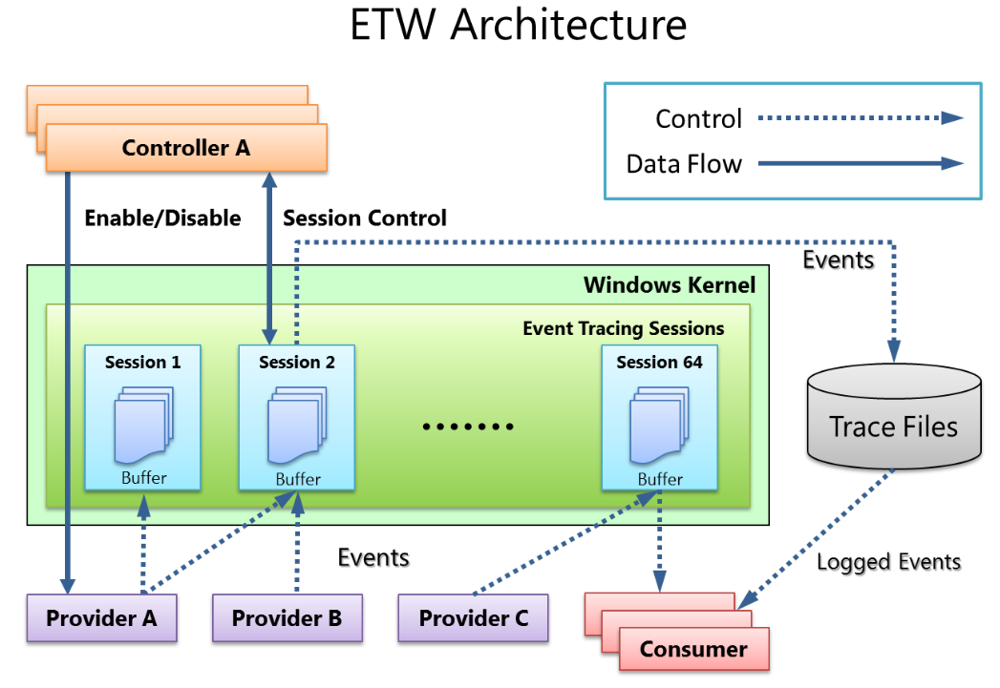
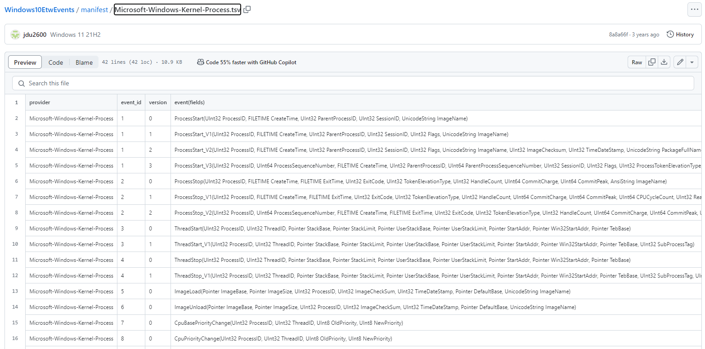
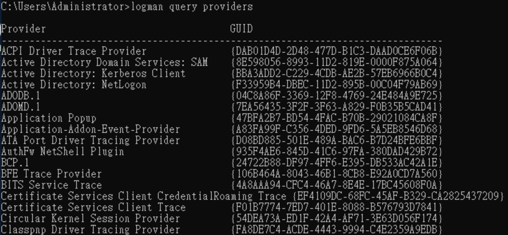
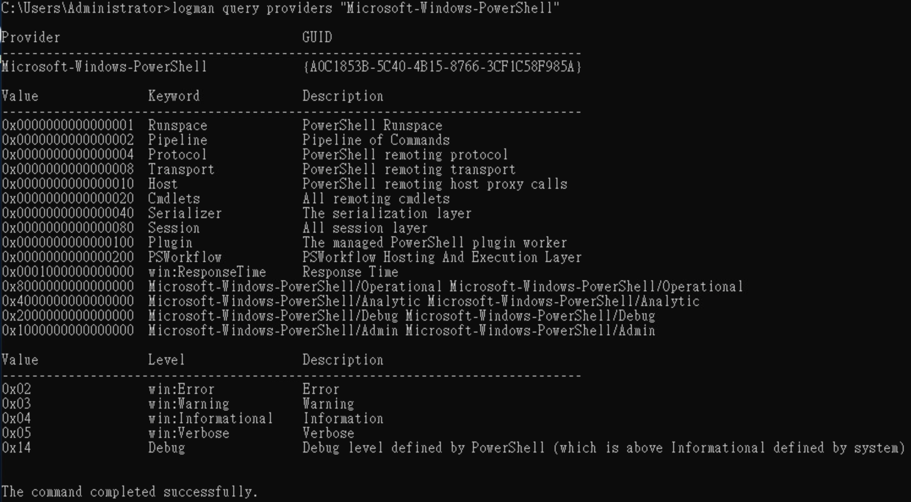
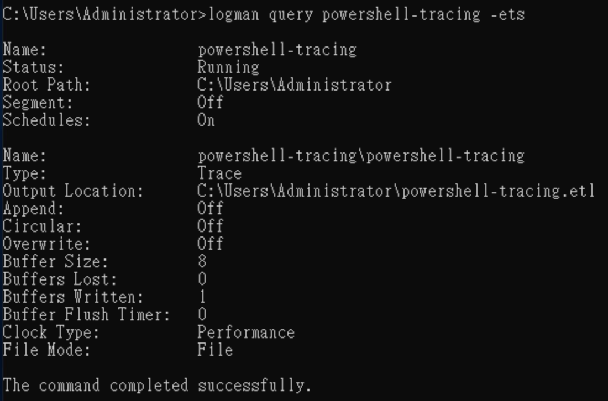
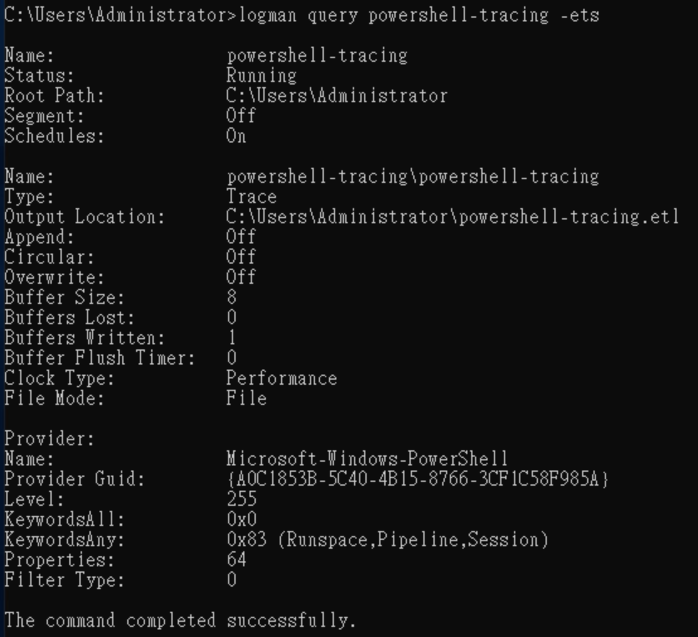
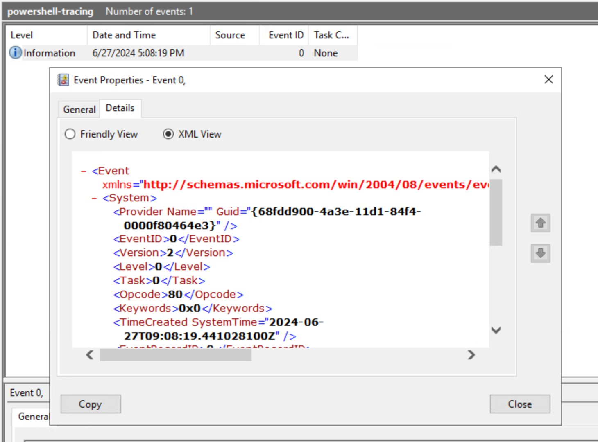
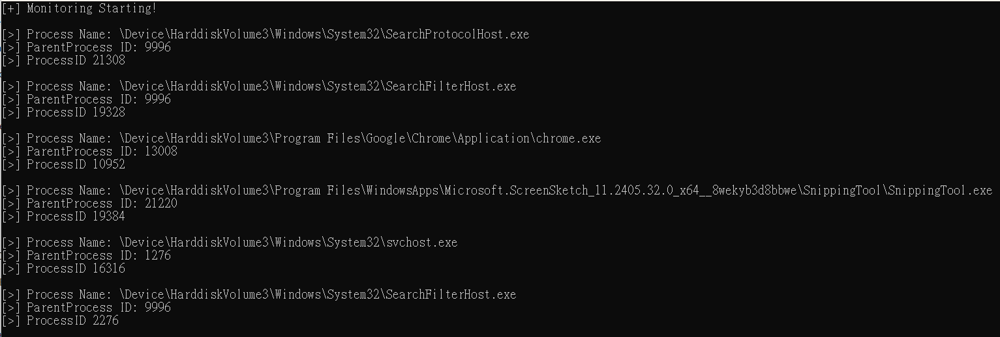

ETW
Event Tracing for Windows (ETW) provides a mechanism to trace and log events that are raised by user-mode applications and kernel-mode drivers.

The components of ETW include Controller, Provider, Consumer, and Session :
- Controller: Controls the enabling/disabling of Providers, creates Sessions, and sets which Providers are responsible.
- Provider: Generates events and sends them to Sessions.
- Consumer: Views and utilizes data from Sessions.
- Session: Records events from one or more Providers and manages/clears buffer data.
Windows10EtwEvents
One Provider may offer multiple events, each identified by a specific Event ID.
Therefore, there are online resources that compile information about various Providers and their corresponding event IDs. For details, please refer to Windows10EtwEvents.
Example :
Check Microsoft-Windows-Kernel-Process event

Using ETW:
Windows includes a built-in tool called Logman, which can be used to view information about Providers and the status of Sessions.
Example :
logman query providersallows you to see all configured Providers on the system

-
Viewing a specific Provider

-
logman create trace powershell-tracing -etsCreating a session
-
logman update powershell-tracing -p Microsoft-Windows-PowerShell 0x83 -etsThis command allows you to specify a Provider and choose the events provided by the Provider.
-pchoose Provider0x83subscribes to events fromMicrosoft-Windows-PowerShell- 0x0000000000000001 Runspace
- 0x0000000000000002 Pipeline
- 0x0000000000000080 Session
-
0x01 + 0x02 + 0x80 = 0x83

-
You can see
powershell-tracing.etlfrom the Event Viewer.
krabsetw
krabsetw is a C++ library that simplifies interaction with ETW. For details, please refer to krabsetw。
The following uses the krabsetw library to monitor process start events in the Windows system.
#include <krabs.hpp>
#include <iostream>
void start_etw_trace()
{
krabs::user_trace trace;
krabs::provider<> provider(L"Microsoft-Windows-Kernel-Process"); //choose Provider
provider.any(0x10); // choose event WINEVENT_KEYWORD_PROCESS
auto process_callback = [](const EVENT_RECORD& record, const krabs::trace_context& trace_context) {
krabs::schema schema(record, trace_context.schema_locator); // Definition of file structure
krabs::parser parser(schema); // Used for parsing and extracting specific property values from event logs.
uint32_t ppid = parser.parse<uint32_t>(L"ParentProcessID");
uint32_t pid = parser.parse<uint32_t>(L"ProcessID");
std::wstring image_name = parser.parse<std::wstring>(L"ImageName");
std::wcout << L"[>] Process Name: " << image_name << std::endl;
std::wcout << L"[>] ParentProcess ID: " << ppid << std::endl;
std::wcout << L"[>] ProcessID " << pid << std::endl;
std::wcout << std::endl;
};
// real-time process start events
krabs::event_filter process_filter(krabs::predicates::id_is(1)); // Only capture events with ID 1.
process_filter.add_on_event_callback(process_callback); // When the filter captures an event, it will be passed to a callback for processing.
provider.add_filter(process_filter); // Add the filter to the provider.
trace.enable(provider); // Set up to use the specified Provider.
trace.start(); // Event tracing will officially start.
}
int main()
{
std::cout << "[+] Monitoring Starting!\n" << std::endl;
start_etw_trace();
}

ETWProcessMon2
ETWProcessMon2 is for Monitoring Process/Thread/Memory/Imageloads/TCPIP via ETW + Detection for Remote-Thread-Injection & Payload Detection by VirtualMemAlloc Events (in-memory) etc. For details, please refer to ETWProcessMon2 。
Tools
- https://github.com/jdu2600/Windows10EtwEvents
- https://learn.microsoft.com/zh-tw/windows-server/administration/windows-commands/logman
- https://github.com/DamonMohammadbagher/ETWProcessMon2?tab=readme-ov-file